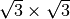
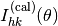
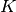
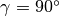
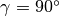
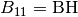
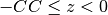
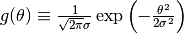
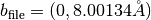

sim-trhepd-rheed documentation¶
Introduction¶
Overview¶
The software package SIM-TRHEPD-RHEED (STR) is a simulator for total-reflection high-energy positron diffraction (TRHEPD) and reflection high-energy electron diffraction (RHEED). Please cite Ref. [1] and [2], if you use the software in a research paper.
The software was written originally by Takashi Hanada [1] and is based on the theory written in Ref.[3]. The present package, STR v. 1.0 [2], was developed with the support of “Project for advancement of software usability in materials science” of The Institute for Solid State Physics, The University of Tokyo.
The package contains Fortran codes and Python3 scripts. A standard Linux environment is assumed throughout the present document.
[1] T. Hanada, H. Daimon, and S. Ino, Rocking-curve analysis of reflection high-energy electron diffraction from the Si(111)-()R30°-Al, -Ga, and -In surfaces, Phys. Rev. B 51, 13320–13325 (1995).
[2] T. Hanada, Y. Motoyama, K. Yoshimi and T. Hoshi, submitted to Computer Physics Communications.
[3] A. Ichimiya, Many-beam calculation of reflection high energy electron diffraction (RHEED) intensities by the multi-slice method, Jpn. J. Appl. Phys. 22, 176-180 (1983).
License¶
This package is distributed under GNU General Public License version 3 (GPL v3).
Installation¶
Download and installation¶
Here, a standard linux OS with a Fortran90 and Python3 environment is assumed.
One can download the source code with git command in a working directory
$ git clone http://github.com/sim-trhepd-rheed/sim-trhepd-rheed
and the following directory will be generated
sim-trhepd-rheed
In the sim-trhepd-rheed directory, execute the command below in order
$ cd src/
$ make
and the following executable files will be generated.
bulk.exe
surf.exe
xyz.exe
potcalc.exe
Note: The source codes of the numerical calculation library LAPACK (zgeev.f, zgeevb.f) are stored in the src/ directory and are also compiled. If LAPACK is preinstalled in your computer, you can use preinstalled LAPACK by editing the src/Makefile file properly.
In addition, Python3 scripts
tool/make_convolution.py
tool/todft/to_dft.py
are also prepared. The required Python modules for the scripts will be explained later.
Set the environmental variables properly so that you can run the binary files and the srcipts.
Switching between TRHEPD and RHEED modes¶
The default source code of STR is written for TRHEPD experiment. If one would like to use STR for RHEED experiment, one should modify the line
ep='P'
into
ep='E'
in bulkm.f90, surfm.f90, U0.f90, before the compilation. Hereafter we explain the TRHEPD case.
Usage¶
Brief explanation¶
In STR, the partial differential equation (PDE) of dynamical quantum diffraction theory
is solved numerically to obtain the intensity  where the indices specify the surface reciprocal lattice vector.  is a wave number in vacuum in a two-dimensional periodic potential of crystal surface. The parameter  is the sign of the particle (+/- for positron/electron). The crystal potential , which is a complex function owing to the inelastic effect, is determined by the lattice parameters, the atomic positions of
is the sign of the particle (+/- for positron/electron). The crystal potential , which is a complex function owing to the inelastic effect, is determined by the lattice parameters, the atomic positions of  -th atom in a unit mesh, and the atomic scattering factors corrected by mean-square displacements.
The database of the atomic scattering factors is implemented in STR among the atomic numbers of
-th atom in a unit mesh, and the atomic scattering factors corrected by mean-square displacements.
The database of the atomic scattering factors is implemented in STR among the atomic numbers of  =1 (H), 2 (He), …, 98 (Cf).
The calculation procedure is decomposed into three stages as explained in Ref.[2].
At the first stage, the application bulk.exe is executed
so as to solve the PDE in the bulk region.
The required input file is bulk.txt
so as to set the atom positions in the bulk region.
The output file is bulkP.b, which is required in the next stage.
At the second stage, the application surf.exe is executed
so as to solve the PDE in the surface region.
The required input file is surf.txt
so as to set the atom positions in the surface region.
The output file is surf-bulkP.s that contains
the rocking curve data.
At the third stage,
the convolution procedure is executed
by make_convolution.py.
The details of both input and output files are explained in Example 1.
We also show the schematic figure of TRHEPD and RHEED experiments below.
=1 (H), 2 (He), …, 98 (Cf).
The calculation procedure is decomposed into three stages as explained in Ref.[2].
At the first stage, the application bulk.exe is executed
so as to solve the PDE in the bulk region.
The required input file is bulk.txt
so as to set the atom positions in the bulk region.
The output file is bulkP.b, which is required in the next stage.
At the second stage, the application surf.exe is executed
so as to solve the PDE in the surface region.
The required input file is surf.txt
so as to set the atom positions in the surface region.
The output file is surf-bulkP.s that contains
the rocking curve data.
At the third stage,
the convolution procedure is executed
by make_convolution.py.
The details of both input and output files are explained in Example 1.
We also show the schematic figure of TRHEPD and RHEED experiments below.
List of the two-dimensional space groups¶
In the input file bulk.txt and surf.txt, one can specify the bulk and surface structure with a two-dimensional space group. The index NSG specifies the two-dimensional space group and are shown in the following table
NSG |
symmetry |
|---|---|
1 |
p1 |
2 |
p211 |
3 |
p1m1 |
4 |
p1g1 |
5 |
c1m1 |
6 |
p2mm |
7 |
p2mg |
8 |
p2gg |
9 |
c2mm |
10 |
p4 |
11 |
p4mm |
12 |
p4gm |
13 |
p3 |
14 |
p3m1 |
15 |
p31m |
16 |
p6 |
17 |
p6mm |
Example 1: Si(111)-()R30  surface with a T4-site Al adatom¶
surface with a T4-site Al adatom¶
The present package contains two examples in the sample/ directory for tutorial.
In the code,
the z-axis is assumed to be perpendicular to the surface and
the region is the vacuum region.
The vectors  and
and  are defined
as the bulk 1 x 1 unit-cell vectors perpendicular to the z-axis.
are defined
as the bulk 1 x 1 unit-cell vectors perpendicular to the z-axis.
The first example is the TRHEPD data for Si(111)-()R surface with a T4-site Al adatom under the many-beam condition. The present section details the typical usage of STR. The input data files, bulk.txt and surf.txt, are stored in the sample/T4Al_on_Si_111/ directory. The output files are stored in the sample/T4Al_on_Si_111/output/ directory.
First stage: bulk part calculation¶
The bulk part is the crystalline silicon and the input file bulk.txt is as follows
bulk.txt
01: 3,3,1 ,NH,NK,NDOM, ----- Si(111) bulk
02: 13 ,NB
03: 0 ,RDOM
04: -6,-6,-5,-5,-4,-4,-3,-3,-2,-2,-1,-1,0,0,
1,1,2,2,3,3,4,4,5,5,6,6 , (IH(I),IK(I))
05: 15,-30,-30,0,0.5,7,0.1 ,BE,AZI,AZF,DAZ,GI,GF,DG
06: 0.1,100 ,DZ,ML
07: 1 ,NELM
08: 14,1.0, 0.1 ,Si Z,da1,sap
09: 0.4,0.4,0.4 ,BH(I),BK(I),BZ(I)
10: 14, 3.83966, 3.83966, 120, 3.13507, -0.333333, 0.333333, NSG,AA,BB,GAM,CC,DX,DY
11: 2 , NATM
12: 1, 1, 0, 0, 1.17565 , IELM(I), ocr(I), X(I), Y(I), Z(I)
13: 1, 1, -0.333333, 0.333333, 1.95942 , IELM(I), ocr(I) , X(I), Y(I), Z(I)
Hereafter, the line number of the text file is indicated at the head of each line.For example, the real fourth line is ‘-6,-6,-5,-5,-4,-4,-3,-3,-2,-2,-1,-1,0,0, 1,1,2,2,3,3,4,4,5,5,6,6 ,(IH(I),IK(I))’.
The parameters are explained below
NH, NK, NDOM
NH, NK
The parameters specify the beam indices used in the calculation. With a set of integer parameters, IH and IK, the beam component (IH / NH, IK / NK) is included in the calculation, where the unit is bulk 1 × 1 reciprocal lattice. The unit cell of the reconstructed surface structure is described in the input data for surf.exe (surf.txt)
NDOM
The number of domains and is 1, unless a multi-domain system is calculated. The possible maximum number of domains is six. (NDOM ). Multiple-domain systems (NDOM > 1) are supported within the cases in which the domains form the same reconstructed surface with different orientations and their intensities must be summed. Moreover a multiple-domain system is supported, only if the two lattice vectors have the same length ( ) and the angle between them (
 ) satisfies  or .
) satisfies  or .
NB(I)
The parameter NB(I) is the number of beams in domain I for I = 1, .., NDOM.
RDOM(I)
The parameter RDOM(I) is an azimuth shift angle in domain I and should be written for I = 1 to NDOM in degree unit. All in domain I are shifted by RDOM(I) from the default values. In the case of , RDOM(I) is allowed as (integer) x . In the case of , RDOM(I) is allowed as (integer) x .
IH(J, I), IK(J, I)
Repeat the following line inside the curly bracket for I = 1, .., NDOM.
BE, AZI, AZF, DAZ, GI, GF, DG
BE
Beam energy (unit: KeV)
AZI
Initial (minimum) azimuthal angle (unit: degree)
AZF
Final (maximum) (unit: degree)
DAZ
interval (unit: degree)
Note: is zero, if the direction is along the a-axis direction of the bulk. is positive, if it rotates counterclockwise from the viewpoint of the vacuum side.
GI
Initial (minimum) glancing angle (unit: degree).
GF
Final (maximum) (unit: degree).
DG
interval (unit: degree).
DZ, ML
DZ
Slice thickness or the mesh interval in the z-direction (unit: ). Typically, DZ is 0.1~0.01.
ML
The maximum number of the bulk layers that contribute to the reflection effect. Here the layer unit length is CC defined below. Typically, ML is ~ 100.
NELM
The number of atom species in the bulk region. In the present context, one ‘atom species’ indicates the parameter set of the scattering properties and may be not identical to chemical species.
Repeat the following line inside the curly bracket for I = 1, .., NELM.
{
iz, da1, sap
iz
Atomic number.
da1
The correction parameter in the real part of the atomic scattering factor. da1 is subtracted from Doyle and Turner’s parameter or Peng’s parameter .Typically, da1 is ~ 1.0 but must be smaller than or . See P.A. Doyle and P.S. Turner: Acta Cryst. A24 (1968) 390, L. -M. Peng, Micron 30 (1999) 625 and so on.
sap
The scale parameter in the imaginary part of atomic scattering factor. The imaginary part is sap times as large as the real part. Typically, sap is 0.12 to 0.15 for BE = 10 KeV and is approximately proportional to BE . See G. Radi: Acta Cryst. A26 (1970) 41.
BH(I)//
Surface component in the direction of , the reciprocal lattice vector of

BK(I)//
Surface component in the direction of , the reciprocal lattice vector of . , , and . In the present code, BH = BK is required in most cases.
BZ(I)
The z-axis component.
 ,
,  , and
, and
NSG, AA, BB, GAM, CC, DX, DY
NSG
The index of the two-dimensional space groups of bulk 1×1 structure. NSG = 1, 2, .., 16 or 17. See Sec. ‘List of the two-Dimensional space Groups’.
AA
The length of the primitive translation vector
( )BB
The length of the primitive translation vector ( )
GAM
The angle
between the two vectors and (degree)CC
The unit layer thickness perpendicular to the surface ( ). Note that the unit layer may be not that for the periodic cell but that for a stacking structure. For example, the periodic cell of zinc-blend (111) surface is the stacked three-layer (‘ABC’) structure and the unit layer can be set to be one layer of the three.
DX, DY
For atoms which are placed in the upper layer on the distance CC, atoms move move DX
+ DY in the in-plane direction.
For example, in the case of the zinc-blende (111) plane,
instead of giving the atomic coordinates of three layers of ABC,
give the atomic coordinates of one layer (unit thickness is CC), and you can shift them 1/3 by using DX and DY.
NATM
The number of the independent atoms in the 1 x 1 unit cell, according to the symmetry corresponding to NSG.
IELM(I), ocr(I), X(I), Y(I), Z(I)
IELM(I)
The atom-species index IELM(I) = 1, 2, .. or NELM.
ocr(I)
The occupation ratio of atom I.
X(I)
The coordinate of atom I in the direction of
(unit: AA).Y(I)
The coordinate of atom I in the direction of (unit: BB).
In order to correctly perform symmetry operations in a 2D plane, X- and Y-coordinates of atoms on a rotational symmetry axis perpendicular to the surface or on a mirror plane perpendicular to the surface should have an accuracy of 4 digits or more after the decimal point (the error should be 0.0001 or less). If it deviates more than that, it is determined that the position has low symmetry, and the number of expansions to the symmetric position in the plane becomes excessive. Also, since an atoms on a mirror plane must move along the plane and X- and Y-coordinates cannot change independently, take care to optimize the positions.
Z(I)
The z-axis coordinate of atom I (unit: ). The values should satisfy z(i) <CC. Note that the scattering potential for is calculated with the contribution from the atoms the lower unit  and the upper unit .
The bulk part calculation is carried out by
$ bulk.exe
and the output file bulkP.b, a binary file, appears. The output file is required in the surface part calculation explained in the next subsubsection.
Second stage: surface part calculation¶
The surface part is described in the input file surf.txt as follows:
surf.txt
01: 3 ,NELMS, -------- Si(111)-root3 x root3-R30-Al T4
02: 13,1.0,0.1 , Al Z,da1,sap
03: 0.6,0.6,0.6 ,BH(I),BK(I),BZ(I)
04: 14,1.0,0.1 , Si Z,da1,sap
05: 0.6,0.6,0.6 ,BH(I),BK(I),BZ(I)
06: 14,1.0,0.1 , Si Z,da1,sap
07: 0.4,0.4,0.4 ,BH(I),BK(I),BZ(I)
08: 15,2,1,-1,1, 1.7, 0.33333,-0.33333
,NSGS,msa,msb,nsa,nsb,dthick,DXS,DYS
09: 7 ,NATM
10: 1,1 0.00000 0.00000 6.55449
11: 2,1 0.63960 0.31980 5.13449
12: 3,1 0.00000 0.00000 4.08072
13: 3,1 1.00000 1.00000 4.51072
14: 3,1 0.00000 0.00000 1.77942
15: 3,1 1.00000 1.00000 2.08942
16: 3,1 0.33333 0.66667 1.17565
17: 1 ,WDOM
The parameters are explained below
NELMS
The number of atom species in the surf region.
iz, da1, sap
See the explanation of these parameters in bulk.txt
BH(I), BK(I), BZ(I)
See the explanation of these parameters in bulk.txt
}
NSGS, msa, msb, nsa, nsb, dthick, DXS, DYS
NSGS
The index of the two-dimensional space group of the reconstructed surface structure. NSGS = 1, 2, .., 16 or 17. See Sec. ‘List of the two-Dimensional space Groups’.
msa, msb, nsa, nsb
Primitive translation vectors for the reconstructed surface structure and are determined, according to the primitive translation vector
and of 1 x 1 bulk structure, as
= msa x + msb x and = nsa x + nsb x .
Examples are written below; Si(111)-(7×7) surface is described by msa = nsb = 7, msb = nsa =0, NSGS=14.
Si(111)  surface is described by msa = 2, msb = 1, nsa = -1, nsb = 1, NSGS=15.
Si(001)-c(4×2) surface is described by msa = 4, nsb = 2, msb = nsa =0, NSGS=9.
Si(001)-p(2×2) surface is described by msa =2, nsb = 2, msb = nsa = 0, NSGS=7.
Si(001)-(2×1) surface is described by msa = 2, nsb = 1, msb = nsa =0, NSGS=6.
surface is described by msa = 2, msb = 1, nsa = -1, nsb = 1, NSGS=15.
Si(001)-c(4×2) surface is described by msa = 4, nsb = 2, msb = nsa =0, NSGS=9.
Si(001)-p(2×2) surface is described by msa =2, nsb = 2, msb = nsa = 0, NSGS=7.
Si(001)-(2×1) surface is described by msa = 2, nsb = 1, msb = nsa =0, NSGS=6.dthick
The thickness of tail region of potential into vacuum ( unit: ). The surface region is extended to (z-coordinate of the top surface-layer atom) + dthick in the surface part calculation. Typically, dthick is 2.0.
DXS, DYS
In order to overlap the surface layer in accordance with the top layer of the bulk (coordinates described in the input data of BULK.EXE), all the atoms on the surface layer move DXS (unit is bulk AA) in the direction of the unit vector a., and move DYS (unit is bulk BB) in the direction of b.
NATMS
The number of the independent atoms in the reconstructed surface cell, according to the symmetry corresponding to NSGs.
Repeat the following line inside the curly bracket for I = 1, .., NATM
{
IELM(I), ocr(I), X(I), Y(I), Z(I)
IELM(I)
The atom-species index IELM(I) = 1, 2, .. or NELM.
ocr(I)
The occupation ratio of atom I.
X(I)
The coordinate of atom I in the direction of
(unit: AA)Y(I)
The coordinate of atom I in the direction of (unit: BB).
Z(I)
The z-axis coordinate of atom I (unit: ). The position at z = 0 in the surface region corresponds to that at z = CC in the bulk region.
}
WDOM(I)
The weight of the intensity for domain I for I=1,…, NDOM. For example, a system of three domains (NDOM=3) with the same weights is described as ‘1, 1, 1’.
The surface part calculation is carried out by
$ surf.exe
and the output file surf-bulkP.s that contains the rocking curve data for the preset angles appears. The example of surf-bulkP.s is shown below.
#azimuths,g-angles,beams
1 66 13
#ih,ik
-6 -6 -5 -5 -4 -4 -3 -3 -2 -2 -1 -1 0 0 1 1 2 2 3 3 4 4 5 5 6 6
0.5000E+00, 0.0000E+00, 0.0000E+00, 0.0000E+00, 0.0000E+00, 0.0000E+00, 0.0000E+00, 0.7850E-02, 0.0000E+00, 0.0000E+00, 0.0000E+00, 0.0000E+00, 0.0000E+00, 0.0000E+00,
...
The second line 1 66 13 gives a number of azimuth angles (NDOM), glancing angles ( (GF-GI)/DG + 1), and beams (NB), respectively.
The fourth line -6 -6 -5 -5 .. shows (IH(I),IK(I)) defined in the surf.txt.
After the fifth line, the values and are given.
Third stage: convolution procedure¶
After the surface-part calculation,
the convolution procedure
where  should be carried out.
In STR,  is determined through the input parameter of full width at half maximum
is determined through the input parameter of full width at half maximum  which satisfies .
The parameter governs the broadening effect on the glancing angle due to the angular divergence of the incident beam.
This calculation is done by typing the following command:
which satisfies .
The parameter governs the broadening effect on the glancing angle due to the angular divergence of the incident beam.
This calculation is done by typing the following command:
$ python3 make_convolution.py --filename surf-bulkP.s --omega 0.5
Here the full width at half maximum is chosen to be . The output file convolution.txt appears and contains the rocking curve data.
The first column of convolution.txt is the glancing angle in the degree. The NB=13 rocking curves appear in the second, third, .., fourteenth column. The example of convolution.txt is shown below.
5.00000e-01 6.08268e-152 2.53169e-103 1.42534e-64 1.39765e-35 9.13173e-16 2.92908e-05 5.64393e-03 2.92908e-05 9.13173e-16 1.39765e-35 1.42534e-64 2.53169e-103 6.08268e-152
6.00000e-01 1.08158e-146 4.89892e-99 3.00185e-61 3.21190e-33 2.31088e-14 9.52466e-05 7.55337e-03 9.52466e-05 2.31088e-14 3.21190e-33 3.00185e-61 4.89892e-99 1.08158e-146
7.00000e-01 1.54062e-141 7.59395e-95 5.06471e-58 5.91723e-31 4.70229e-13 2.57949e-04 9.08240e-03 2.57949e-04 4.70229e-13 5.91723e-31 5.06471e-58 7.59395e-95 1.54062e-141
Example 2: Ge(001)-c() surface¶
The second example is the TRHEPD data for Ge(001)-c() surface structure in the one-beam condition. The present section details the usage of the two optional utilities, xyz.exe and potcalc.exe.
Utility xyz.exe¶
The utility xyz.exe generates the atom position data into the xyz-format file and is used, for example, when one would like to visualize the atomic structure. The utility is carried out by
$ xyz.exe
in the directory that contains bulk.txt and surf.txt. When one executes xyz.exe, the message
# of a-units, b-units & bulk layers ? :
appears and requires the three integer parameters , so as to determine the region of the generated structure file. For example, one types
1 1 2
for the case of . The two-dimensional lattice vectors of the generated structure file are and . The thickness of the bulk region in the generated structure file is set to be .
The generated structure file is sample/Ge_001_c4x2/output/surf-bulk.txt. The last two lines of the file
16.00267 0.00000
0.00000 8.00134
indicate the two-dimensional periodic cell vectors, and .
Utility potcalc.exe¶
After the surface part calculations,
the utility potcalc.exe plots the complex potential
where  is the mass of positron and electron.
The utility is valid only in the one-beam condition.
When one executes xyz.exe, the message
is the mass of positron and electron.
The utility is valid only in the one-beam condition.
When one executes xyz.exe, the message
# of bulk-unit repetition ?
appears and requires one integer parameter, so as to define the lower limit of z in the generated numerical data of the potential. For example, one types
3
for the surface region and the bulk region, where the bulk region consists of three bulk-unit repetitions.
Utility to_dft.py¶
The present section details the Python3 utility to_dft.py, which enables us a DFT calculation by Quantum ESPRESSO (QE) for the files in STR.
The utility generates the input file of QE from the xyz-formatted structure file. The utility can also run QE, if QE is installed. As an optional function, the utility supports the generation of hydrogen-terminated structure in limited types of surface structures.
This section gives a tutorial of to_dft.py with the Si(001)-(2x1) surface. The input and output files are available on the tool/todft/sample/Si001 directory.
Prerequisites¶
The utility requires
Python3 >= 3.6
The following packages are also required:
Atomic Simulation Environment(ASE) (>= 3.21.1)
NumPy
SciPy
Matplotlib
tomli
Input files¶
One should prepare an xyz-formatted structure file. An example is surf_Si001.xyz in the tool/todft/sample/Si001/ directory.
surf_Si001.xyz
12
Si(001) surface test
Si 1.219476 0.000000 9.264930
Si 6.459844 0.000000 9.987850
Si 1.800417 1.919830 8.404650
Si 5.878903 1.919830 8.404650
Si 3.839660 1.919830 7.155740
Si 0.000000 1.919830 6.900440
Si 3.839660 0.000000 5.743910
Si 0.000000 0.000000 5.597210
Si 1.919830 0.000000 4.321250
Si 5.759490 0.000000 4.321250
Si 1.919830 1.919830 2.963750
Si 5.759490 1.919830 2.963750
One should prepare also a controlling file in Tom’s Obvious, Minimal Language (TOML). An example is input.toml in the tool/todft/sample/Si001 directory.
input.toml
[Main]
input_xyz_file = "surf_Si001.xyz"
output_file_head = "surf_Si001_output"
[Main.param]
z_margin = 0.001
slab_margin = 10.0
[Main.lattice]
unit_vec = [[7.67932, 0.00000, 0.00000], [0.00000, 3.83966, 0.00000]]
[H_term]
r_SiH = 1.48 #angstrom
theta = 109.5 #H-Si-H angle in degree
[ASE]
solver_name = "qe"
kpts = [3,3,1] # sampling k points (Monkhorst-Pack grid)
command = "mpirun -np 4 ./pw.x -in espresso.pwi > espresso.pwo"
[Solver]
[Solver.control]
calculation='relax' # 'scf','realx','bands',...
pseudo_dir='./' # Pseudopotential directory
[Solver.system]
ecutwfc = 20.0 # Cut-off energy in Ry
[Solver.pseudo]
Si = 'Si.pbe-n-kjpaw_psl.1.0.0.UPF'
H = 'H.pbe-kjpaw_psl.1.0.0.UPF'
The input file consists of four sections: Main, H_term, ASE, and Solver.
Below is a brief description of the variables for each section.
The section H_term is required,
only if one would like to generate the hydrogen-terminated structure.
If not, the section H_term should not appear.
Main section¶
This section contains settings related to the parameters required for hydrogen termination.
input_xyz_fileFormat: string
Description: Name of the xyz file to input
output_file_headFormat: string
Description: Header for output files (xyz and cif files)
Main.Param section¶
z_marginFormat: float
Description: Margin used to extract the lowest and second-to-last atoms. For example, if the z-coordinate of the atom in the bottom layer is
z_min, the atoms inz_min - z_margin <= z <= z_min + z_marginwill be extracted.slab_marginFormat: float
Description: Margin for tuning the size of the slab. If the z-coordinates of the atoms in the bottom and top layers are
z_min,z_max, then the slab size is given byz_max-z_min+slab_margin.
Main.lattice section¶
unit_vecFormat: list
Description: Specify the lattice vectors (ex.
unit_vec = [[7.67932, 0.00000, 0.00000], [0.00000, 3.83966, 0.00000]]).
H_term section¶
This section enables us to generate the hydrogen-terminated structure. At the present code supports the hydrogen-terminated structures for the present (001)-type slab of the diamond structure. The hydrogen-terminated models are generated in the following manner: The bottom layer atoms are removed, and H atoms are placed at the corresponding positions to create a model with the distance to the next layer atoms adjusted to a tetrahedral structure (for example, the distance to a silane molecule in the case of Si).
r_SiHFormat: float
Description: The distance (in ) between a vertex (e.g. Si) and H of a tetrahedral structure.
thetaFormat: float
Description: The angle between the two vertex-H bonds of the tetrahedral structure (e.g. H-Si-H).
ASE section¶
This section specifies parameters related to ASE.
solver_nameFormat: string
Description: The name of the solver. Currently, only
qeis given.kptsFormat: list
Description: Specify the k-points to be sampled (Monkhorst-Pack grid).
commandFormat: string
Description: Set the command used to run the solver.
Solver section¶
In this section, parameters related to Solver are specified.
You will need to specify this if you want to perform first-principles calculations directly using ASE.
Basically, the configuration is the same as the one specified in the input file of each solver.
For example, in the case of QE, Solver.control contains the parameters to be set in the control section of QE. The required pseudopotential files written in Solver.pseudo section should be downloaded, for example, by the wget command:
wget https://www.quantum-espresso.org/upf_files/Si.pbe-n-kjpaw_psl.1.0.0.UPF
wget https://www.quantum-espresso.org/upf_files/H.pbe-kjpaw_psl.1.0.0.UPF
Execution¶
The script to_dft.py is carried out by
$ python3 to_dft.py input.toml
and the following files are generated:
surf_Si001_output.xyzsurf_Si001_output.cifespresso.pwiespresso.pwo
The three files surf_Si001_output.xyz, surf_Si001_output.cif and espresso.pwi are those in the xyz format, the Crystallographic Information File (CIF) format and the input file of QE, respectively. The files in the xyz and CIF formats are useful for visualization and are not required for QE. If QE works properly, the output file of QE, espresso.pwo appears. If QE does not work properly, the output file espresso.pwo contains error messages.
Here, the calculated structure is the hydrogen-terminated structure;
surf_Si001_output.xyz
14
Lattice= "7.67932 0.0 0.0 0.0 3.83966 0.0 0.0 0.0 17.0241" Properties=species:S:1:pos:R:3 pbc="T T T"
Si 1.21947600 0.00000000 9.26493000
Si 6.45984400 0.00000000 9.98785000
Si 1.80041700 1.91983000 8.40465000
Si 5.87890300 1.91983000 8.40465000
Si 3.83966000 1.91983000 7.15574000
Si 0.00000000 1.91983000 6.90044000
Si 3.83966000 0.00000000 5.74391000
Si 0.00000000 0.00000000 5.59721000
Si 1.91983000 0.00000000 4.32125000
Si 5.75949000 0.00000000 4.32125000
H 1.91983000 -1.20862950 3.46707512
H 1.91983000 1.20862950 3.46707512
H 5.75949000 -1.20862950 3.46707512
H 5.75949000 1.20862950 3.46707512
Acknowledgements¶
We would like to express our thanks for the support of the "Project for advancement of software usability in materials science" of The Institute for Solid State Physics, The University of Tokyo.
Contact¶
If you have any comments, questions, bug reports etc. about this utility, please contact to the following main developers by sending the e-mail (the address is shown below).
thanada_at_imr.tohoku.ac.jp
hoshi_at_tottori-u.ac.jp
Please change _at_ into @, when you will send the e-mail.